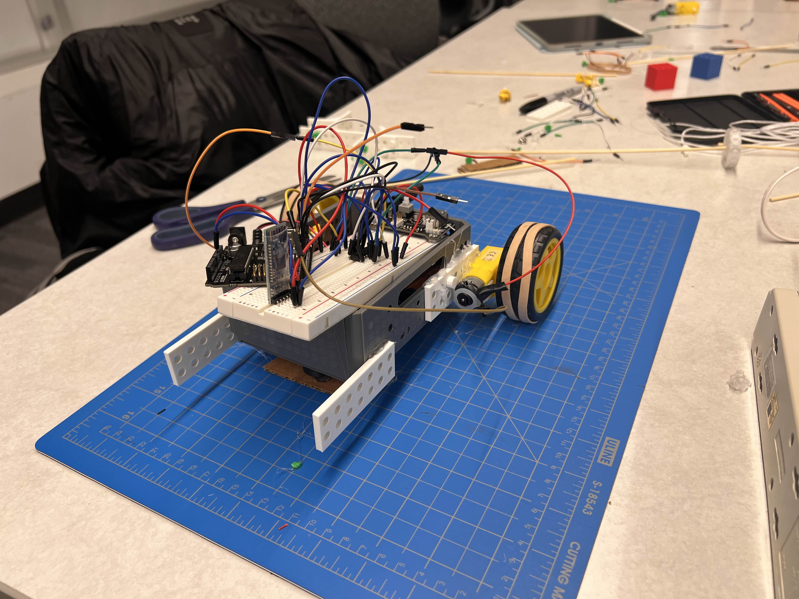

The Arduino Robot was a robot designed for the Western Engineering Competition (WEC) located at the University of Alberta. Performed in a 4 member team, the competition required the movement of waste "bricks" into waste disposal zones of varying difficulty, with the optional ability to pack the bricks into briquettes also of various difficulties. The final design was bluetooth controlled via a mobile phone, in addition to autonomous capabilities. An image depicting the robot can be seen below. Additionally, an unused lifting mechanism was designed.

ASL "V" example
Loading the briquettes proved to be a challenge due to the design of the briquettes. Loading was required to be somewhat precise due to the shape of the briquettes. Additionally, lifting and moving the briquettes proved to be another challenge. To address this, a proposed forklift mechanism was design and prototyped for usage in this role, however due to time constraints, it was determined that this was infeasable, and the scope of the project was changed to instead use to the robot to both manually and autonomously move the blocks into another disposal zone.
Automation proved to be an interesting problem. Initally, several sensors were given and solid black lines were provided in the competition arena. The natural solution would have been to use the provided infrared sensors. However, only one sensor was provided. Eventually, it was decided that the simplest solution, hardcoding the movement of the robot, would prove to be the most effictive and least likley to fail.
The main thing I learned from this, was how goals adapt over time changes. As seen in the challenges, a major factor was the changing of goals and the testing of ideas. This is most prominent in the briquettes, as they required a full redirection of the project's direction. We recognized the infeasability of our original goal, and redirected the energy of our project to instead meet a much more managable requirment.
In addition, from working on the automation I learned about the usage of Arduino, and how to code for microcontrollers. I learned about motorcontrol, and additionally using bluetooth with Arduinos and C++.
My life for Aiur